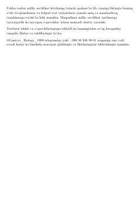

BMBiologiya fanidan milliy sertifikat imtihoni uchun testlar to'plami.
Ushbu kitob biologiya fanidan milliy sertifikat imtihoniga tayyorgarlik ko'rayotgan o'quvchilar uchun mo'ljallangan test variantlarini o'z ichiga oladi. To'plamda prokariot hujayralar, genetika, o'simliklar fiziologiyasi va boshqa biologik jarayonlarga oid murakkab test savollari va ularning tahlillari keltirilgan.